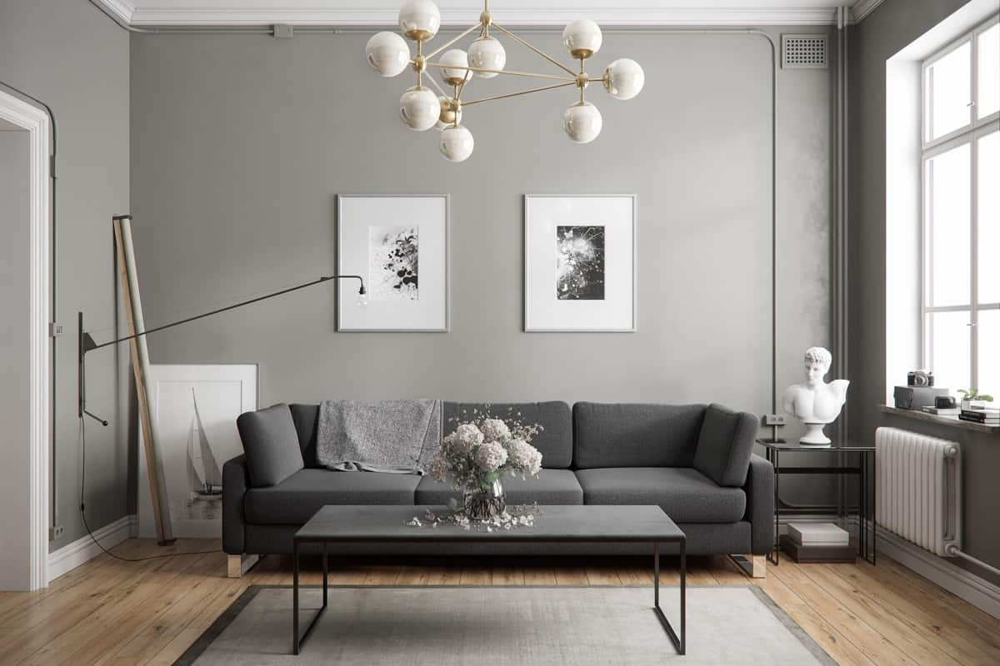

Stil
contemporan
Daca nu crezi în reguli și constrângeri estetice când vine vorba de amenajatul locuinței, atunci o să te îndrăgostești de stilul contemporan de design interior. Nici o altă abordare decorativă a spațiilor interioare nu-ți oferă într-o măsură atât de mare libertatea de a combina mai multe stiluri și de a urma trendurile decorative care iți plac.
Stilul contemporan în amenajări interioare este un stil viu, care evoluează constant și în care se reflectă spiritul timpului, iar asta îl face potrivit pentru oricine este pasionat de cele mai noi tendințe și își dorește un cămin care să-i reflecte personalitatea.
Contemporan este orice trend actual și orice obiect de mobilier produs acum, iar stilul contemporan din anul 2020 diferă de stilul contemporan din anul 2000 sau de cel din anul 1970, pe care, de altfel, le considerăm astăzi stiluri vintage. Un interior contemporan este un spațiu simplu și sofisticat în același timp, în care charmul este creat prin folosirea deliberata a texturii, culorii și formelor pentru a obține o ambianță confortabilă, deschisă și proaspătă.
|  |
●Cum se deosebește stilul contemporan de stilul modern?
Stilul modern se referă la o perioadă din trecut (mai exact, la mijlocul secolului XX, anii ‘50, ‘60) și, cu toate că are în comun cu stilul contemporan estetica minimalistă, lipsa ornamentelor și atmosfera aerisita, se deosebește de acesta în cateva puncte cheie.